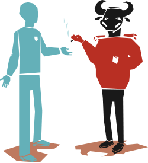
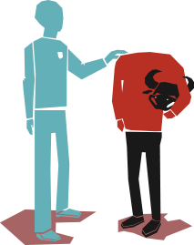
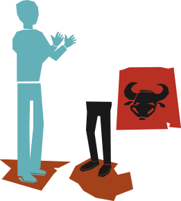
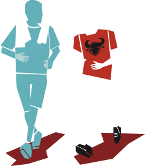

Hefur þú einhvern tíma hugsað
um að hætta tóbaksnotkun
um að hætta tóbaksnotkun
þetta er ekkert vandamál!
frænka vinar míns reykti alltaf þrjá pakka af filterslausum
á dag og varð 97 ára!

frænka vinar míns reykti alltaf þrjá pakka af filterslausum
á dag og varð 97 ára!
FYRSTA ÞREP
FORÍHUGUNARÞREP
(ÆTLAR EKKI AÐ
BREYTA HEGÐUN)
- Hefur engar áætlanir að breyta hegðun
- Vill ekki breyta hegðun sinni og fer í vörn
- Kostir hegðunarinnar mikilvægari en gallarnir
- Forðast upplýsingar og pælir minna en aðrir í hegðun sinni
Er til staðar til að ræða málin, hvetur
og fræðir eftir því sem færi gefst.
og fræðir eftir því sem færi gefst.
Hver yrði helst ávinningurinn
að hætta að nota tóbak?
að hætta að nota tóbak?
ÉG HÆTTI EINHVERN DAGINN. ÞAÐ ER ALVEG KLÁRT.
ÉG GET BARA EKKI FARIÐ AÐ HÆTTA Í FRÍINU!

ÉG GET BARA EKKI FARIÐ AÐ HÆTTA Í FRÍINU!
ANNAÐ ÞREP
ÍHUGUNARÞREP
(Vill breyta hegðun en er
ekki búin að taka ákvörðun)
- Er meðvitaður um áhætturnar og er alvarlega að hugsa um að breyta hegðun
- Er að vega og meta kosti og galla en hefur ekki tekið ákvörðun um að breyta hegðun sinni
- Meðvitaðri um kosti þess að breyta hegðun en veit af göllunum
Talar um ástæðurnar fyrir reykingunum
og kostina við að hætta að reykja.
og kostina við að hætta að reykja.
Ég þekki einn sem fékk aðstoð við
að hætta hjá Reyksímanum 8006030
að hætta hjá Reyksímanum 8006030
Nú er ég alveg að fara að drepa í
Ný vika framundan – tóbakslaus

Ný vika framundan – tóbakslaus
þriðja þrep
Undirbúningsþrep
(Hefur tekið ákvörðun
um að hætta)
- Hefur tekið ákvörðun um að breyta hegðun sinni
- Metur kosti þess að breyta hegðun mikilvægari en ókostina
- Einstaklingar stoppa stutt á þessu stigi
Hrósar fyrir ákvörðunina og býður aðstoð sína og
bendir á leiðir sem gagnast við að hætta að nota tóbak.
bendir á leiðir sem gagnast við að hætta að nota tóbak.
Góður! Þú lítur
strax betur út
strax betur út
Afsakaðu hvað ég er úrilur.
Ég er að hætta í tóbakinu

Ég er að hætta í tóbakinu
fjórða þrep
Framkvæmdarþrep
(Er hætt(ur)
að nota tóbak)
- Hefur breytt sinni hegðun 1 dag til 6 mán
- Þarf mikið að hafa fyrir hegðunarbreytingunni áhætta á bakslagi mikil
- Metur ávinning með hegðunarbreytingu sinni meiri en kostnaðinn
Hrósar, styður og bendir á leiðir
til að koma í veg fyrir bakslag.
til að koma í veg fyrir bakslag.
Þetta er bara allt annað líf
Manstu þegar ég stóð úti á svölum í rigningu og roki til að reykja

fimmta þrep
Viðhaldsþrep
(Hefur ekki notað
tóbak í einhvern tíma)
- Ný hegðun orðin stöðug, hefur varað í meiri en 6 mánuði
- Vinnur að því að koma í veg fyrir bakslag
- Hugsar lítið um gömlu hegðunina
Hrósar, styður og bendir á hættur í umhverfinu
og hvernig hugarástand getur aukið líkur á bakslagi.
og hvernig hugarástand getur aukið líkur á bakslagi.
VANTAR ÞIG HJÁLP VIÐ KOMAST Í GEGNUM
ÞREPIN OG HÆTTA TÓBAKSNOTKUN?
FÁÐU RÁÐGJÖF Í SÍMA: 800 60 30